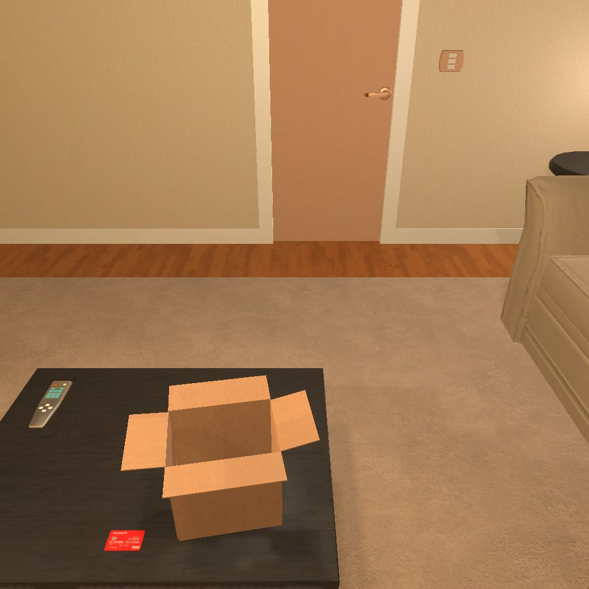

---------------------------------------------------------task: 7---------------------------------------------------------
--------------------------------------------------------------------------------------------------------------------------------------------------------------------
--------------------------------------------------------------------------------------------------------------------------------------------------------------------
Step:--------------------------------------------------------------------------4-------------------------------------------------------------------------------
----------------------------------------
VLM Prompt:
Image1:
**Instruction**
1. Analyze the provided image to identify all visible household objects, focusing on those relevant to the task description "put a creditcard in coffeetable."
2. Use the analysis of the image and the task hint "The agent must find an object of the desired type, pick it up, find the correct location to place it, and put it down there." to answer the question: what is the most reasonable action in the choices for the task description "put a creditcard in coffeetable"?
4. Decide and write the answer using the template: The answer is: (i): , where i is the real number. If there is no desired object in the image, search every place based on **Initial Observation** to find the object. And if no one is exactly correct, choose a similar answer.
**Initial Observation**
You are in the middle of a room. Looking quickly around you, you can see armchair (1-2), dresser (1), garbagecan (1), cabinet (1-4), drawer (1-4), coffeetable (1), sidetable (1), sofa (1)
**Answer Choices**
(1): go to armchair 1
(2): go to armchair 2
(3): go to dresser 1
(4): go to garbagecan 1
(5): go to cabinet 1
(6): go to drawer 1
(7): go to drawer 2
(8): go to cabinet 2
(9): go to drawer 3
(10): go to cabinet 3
(11): go to drawer 4
(12): go to cabinet 4
(13): go to sidetable 1
(14): go to sofa 1
(15): put creditcard 1 in/on coffeetable 1
(16): examine coffeetable 1
**Answer**
Let's think step by step by following the instructions.
----------------------------------------
----------------------------------------
Original Response:
Firstly, we identify all visible household objects in the image concerning the task "put a credit card on a coffee table." We can see a coffee table and a credit card on it.
Now, given the task hint, the agent must find the credit card, pick it up, find the coffee table, and put it down there. Since the credit card is already on the coffee table, the most reasonable action would be to put the credit card in a more appropriate position on the coffee table if it's not already correctly placed.
Based on the **Initial Observation**, we are already in the middle of the room, and the coffee table is in front of us with the credit card on it. Hence, no need to go anywhere else to search for the credit card or the coffee table.
Given these points, the most reasonable action from the choices provided would be to put the credit card properly on the coffee table.
The answer is: (15): put creditcard 1 in/on coffeetable 1.
----------------------------------------
----------------------------------------
>>> Refine Original VLM Response and Get Pure Action: put creditcard 1 in/on coffeetable 1
----------------------------------------
-----------------------------------------------------------------
Running time: 16.33268404006958 seconds
Total Money: 1.9206699999999999
-----------------------------------------------------------------
-----------------------------------------------------------------
Text Observation:You put the creditcard 1 in/on the coffeetable 1.
-----------------------------------------------------------------
SUCCEED